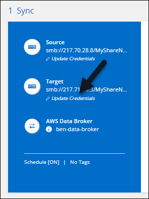
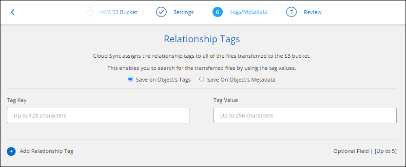
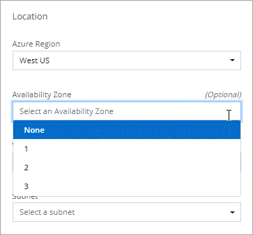

What’s new in Cloud Manager 3.9
Contributors
 Download PDF of this page
Download PDF of this page
Cloud Manager typically introduces a new release every month to bring you new features, enhancements, and bug fixes.
|
Looking for a previous release? What’s new in 3.8 What’s new in 3.7 |
Cloud Manager 3.9.10 (2 September 2021)
Support for Amazon FSx for ONTAP
-
Amazon FSx for ONTAP is a fully managed service allowing customers to launch and run file systems powered by NetApp’s ONTAP storage operating system. FSx for ONTAP provides the same features, performance, and administrative capabilities NetApp customers use on premises, with the simplicity, agility, security, and scalability of a native AWS service.
-
You can configure an FSx for ONTAP working environment in Cloud Manager.
-
Using a Connector in AWS and Cloud Manager, you can create and manage volumes, replicate data, and integrate FSx for ONTAP with NetApp cloud services, such as Data Sense and Cloud Sync.
Cloud Volumes ONTAP enhancement
Data is automatically encrypted on Cloud Volumes ONTAP in Azure using Azure Storage Service Encryption with a Microsoft-managed key. But you can now use your own customer-managed encryption key instead by completing the following steps:
-
From Azure, create a key vault and then generate a key in that vault.
-
From Cloud Manager, use the API to create a Cloud Volumes ONTAP working environment that uses the key.
Cloud Data Sense enhancements
-
Added support for scanning data on NFS volumes on Amazon FSx for ONTAP systems. See how to configure scanning for your FSx for ONTAP systems.
-
The capability to add "Status" information to your files using Data Sense has changed terminology to use "Tags". These are file level tags - not to be confused with resource level tagging that can be applied to volumes, EC2 instances, virtual machines, etc.
Cloud Sync enhancements
You can now sync data to or from an Amazon FSx for ONTAP file system.
Cloud Tiering enhancements
-
New Cloud Tiering BYOL license replaces FabricPool license
A new Cloud Tiering license is now available for tiering configurations that are supported within Cloud Manager using the Cloud Tiering service. It is a floating license that you can use across multiple on-premises ONTAP clusters. The FabricPool license that you may have used in the past is retained only for configurations that aren’t supported within Cloud Manager.
-
Now you can tier inactive data from your on-prem ONTAP clusters to any Object Storage service which uses the Simple Storage Service (S3) protocol.
Replication enhancements
You can now replicate data from a Cloud Volumes ONTAP system or an on-premises ONTAP cluster to an Amazon FSx for ONTAP file system.
Cloud Backup enhancements
-
Now you can create an on-demand backup at any time to capture the current state of a volume. This is useful if important changes have been made to a volume and you don’t want to wait for the next scheduled backup to protect that data.
-
When configuring backups to Amazon S3 from an on-premises ONTAP system, now you can define a connection to a Private Interface Endpoint in the activation wizard. This allows you to use a network interface that connects your on-prem system privately and securely to a service powered by AWS PrivateLink. See details about this option.
-
For additional security and control, you can choose your own customer-managed keys for data encryption in the activation wizard instead of using the default Amazon S3 encryption keys.
This is available when configuring backups from an on-premises ONTAP system or from a Cloud Volumes ONTAP system in AWS.
-
The restriction of being able to browse a single directory with flat files up to a maximum of 30,000 files has been removed. Now you can restore files from directories that have a larger number of files.
Resource Tagging enhancements
-
Now you can manage tags on your Azure resources using the Cloud Manager Tagging service. You can view Azure tags and tag values that have been applied to resources, and you can apply those tags to other Azure resources that you are managing.
The Cloud Manager Operator IAM role associated with the Connector needs the latest permissions to tag Azure resources. See the new permissions that are required.
-
Some additional AWS EC2 resources can now be tagged. See the AWS resources that you can tag.
The Cloud Manager IAM role associated with the Connector needs the latest permissions to tag AWS EC2 instances. See the new permissions that are required.
A new Notification Service has been added
The Notification service has been introduced so you can view the status of Cloud Manager operations that you have initiated during your current login session. You can verify whether the operation was successful, or if it failed. See how to monitor operations in your account.
Cloud Manager 3.9.9 build 2 (18 Aug 2021)
This patch update includes bug fixes.
Cloud Manager 3.9.9 update (8 Aug 2021)
Application Template enhancements
-
Now you can create a Cloud Volumes ONTAP working environment, and your first volume, using templates. This support is provided only for AWS environments at this time, and only for single-node clusters. See how to create a template for a Cloud Volumes ONTAP working environment.
-
A new feature enables you to add tags to a volume in a volume template. Tagging enables you to group different resources to identify applications, regions, or departments in order to perform automation or to allocate costs to certain departments or regions.
Resource Tagging enhancements
Now you can manage tags from your AWS EC2 Instances in Cloud Manager. You can view AWS tags and tag values that have been applied to EC2 Instances, and you can apply those tags to other EC2 Instances that you are managing. Learn more about tagging.
Cloud Manager 3.9.9 (1 Aug 2021)
Cloud Backup enhancements
-
When configuring backups to Azure Blob from an on-premises ONTAP system, you can define a connection to an Azure Private Endpoint in the activation wizard. This allows you to use a network interface that connects you privately and securely to a service powered by Azure Private Link.
-
An Hourly backup policy is now supported in addition to the existing Daily, Weekly, and Monthly policies. The Hourly backup policy provides a minimal Recovery Point Objective (RPO).
Cloud Sync enhancements
-
Cloud Sync now enables you to update the data broker with the latest credentials of the source or target in an existing sync relationship.
This enhancement can help if your security policies require you to update credentials on a periodic basis. Learn how to update credentials.

-
When creating a sync relationship, you can now add tags to the object storage target in a sync relationship.
Adding tags is supported with Amazon S3, Azure Blob, Google Cloud Storage, IBM Cloud Object Storage, and StorageGRID.

-
Cloud Sync now supports Box as the source in a sync relationship to Amazon S3, StorageGRID, and IBM Cloud Object Storage when using the Cloud Sync API.
-
When you deploy a data broker in Google Cloud, you can now choose whether to enable or disable a public IP address for the virtual machine instance.
-
When you choose the source or target volume for Azure NetApp Files, Cloud Sync now displays a dual-protocol volume no matter which protocol you chose for the sync relationship.
Cloud Data Sense enhancements
-
Ability to manage file settings for multiple files at a time.
In earlier versions of Cloud Data Sense you could perform the following actions on one file at a time: add a status tag, assign a user, and add an AIP label. Now you can select multiple files from the Data Investigation page and perform these actions on multiple files.
-
When viewing the Age of Data graph in the Governance dashboard, in addition to viewing data based on the last time it was modified, now you can view the data by when it was created or by when it was last accessed (when it was read).
This information is provided in the Data Mapping Report as well.
-
When deploying Data Sense on-premises, now you can install scanning software on additional on-prem hosts when you plan to scan configurations that include petabytes of data. These additional scanner nodes provide increased processing power when scanning very large configurations.
See how to deploy Data Sense software on multiple hosts.
Monitoring enhancement
We changed the default name of the Acquisition Unit instance to CloudInsights-AU-UUID so that the name is more descriptive (the UUID is a generated hash).
Cloud Manager deploys this instance when you enable the Monitoring service on a Cloud Volumes ONTAP working environment.
Connector enhancement
The Connector is now supported on a host that’s running Red Hat Enterprise Linux 7.9.
Cloud Manager 3.9.8 build 3 (25 July 2021)
This patch update includes bug fixes and security improvements.
Cloud Manager 3.9.8 update (13 July 2021)
Application Template enhancements
-
Support has been added so you can add in the template that you want to replicate the data in the volume you are creating to another volume using the Replication service. When you replicate data to other NetApp storage systems and continually update the secondary data, your data is kept current and remains available whenever you need it.
-
Now you can download a report that includes all the volumes that have "drifted" from your template settings instead of just viewing this information for a single volume in the Dashboard. In this manner you can identify these volumes and assign someone to bring the volumes back into compliance. See how to download your drift report.
New Resource Tagging feature
-
A new Cloud Manager feature enables you to apply tags to your existing ONTAP resources to help organize and manage those resources. Tags are metadata that you can use to group resources to identify applications, environments, regions, billing codes, cloud providers, and more.
Cloud Manager 3.9.8 (7 July 2021)
Cloud Volumes ONTAP enhancements
This release of Cloud Manager includes enhancements to the management of Cloud Volumes ONTAP.
Enhancements available in all cloud providers
-
New charging methods are available for Cloud Volumes ONTAP.
-
Capacity-based BYOL: A capacity-based license enables you to pay for Cloud Volumes ONTAP per TiB of capacity. The license is associated with your NetApp account and enables you to create as multiple Cloud Volumes ONTAP systems, as long as enough capacity is available through your license. Capacity-based licensing is available in the form of a package, either Essentials or Professional.
-
Freemium offering: Freemium enables you to use all Cloud Volumes ONTAP features free of charge from NetApp (cloud provider charges still apply). You’re limited to 500 GB of provisioned capacity per system and there’s no support contract. You can have up to 10 Freemium systems.
Here’s an example of the charging methods that you can choose from when deploying a new Cloud Volumes ONTAP system in Azure:

-
-
Write once, read many (WORM) storage is no longer in Preview and is now available for general use with Cloud Volumes ONTAP. Learn more about WORM storage.
Enhancements available in AWS
Starting with the 9.9.1 release, Cloud Volumes ONTAP now supports the m5dn.24xlarge instance type with the following charging methods: PAYGO Premium, bring your own license (BYOL), and Freemium.
Enhancements available in Azure
-
When creating a Cloud Volumes ONTAP system in Azure, you now have the option to select an existing resource group for the VM and its associated resources.

The following permissions enable Cloud Manager to remove Cloud Volumes ONTAP resources from a resource group, in case of deployment failure or deletion:
"Microsoft.Network/privateEndpoints/delete", "Microsoft.Compute/availabilitySets/delete",Be sure to provide these permissions to each set of Azure credentials that you’ve added to Cloud Manager. You can find the latest list of permissions on the Cloud Manager policies page.
-
As a security enhancement, Cloud Manager now disables Blob public access when creating a storage account for Cloud Volumes ONTAP.
-
By default, Cloud Manager now enables an Azure Private Link connection on the boot diagnostics storage account for new Cloud Volumes ONTAP systems.
This means all storage accounts for Cloud Volumes ONTAP will now use a private link.
Enhancements available in Google Cloud
-
Starting with the 9.9.1 release, Cloud Volumes ONTAP now supports Balanced persistent disks (pd-balanced).
These SSDs balance performance and cost by providing lower IOPS per GB.
-
The custom-4-16384 machine type is no longer supported with new Cloud Volumes ONTAP systems.
If you have an existing system running on this machine type, you can keep using it, but we recommend switching to the n2-standard-4 machine type.
Cloud Backup enhancements
-
Cloud Backup now allows you to create backups using a different account/subscription than the one you are using for your Cloud Volumes ONTAP system. You can also create backup files in a different region than the one in which your Cloud Volumes ONTAP system is deployed.
This capability is available when using when using AWS or Azure, and only when enabling backup on an existing working environment - it is not available when creating a new Cloud Volumes ONTAP working environment.
-
For additional security and control, you can choose your own customer-managed keys for data encryption in the activation wizard instead of using the default Microsoft-managed encryption keys.
This is available when configuring backups from an on-premises ONTAP system or from a Cloud Volumes ONTAP system in Azure.
-
The restriction of restoring only 8 files at a time using single-file restore from your backup files has been removed. Now you can restore up to 100 files at a time.
Cloud Tiering enhancements
When tiering data to Azure Blob storage, now your Connector can be running on your premises. You are no longer required to use a Connector installed in an Azure VNet.
Cloud Data Sense enhancements
-
A new feature enables you to move any source files that Data Sense is scanning to any NFS share. This allows you to move sensitive or security-related files to a special area so you can do more analysis.
-
You can now choose to quickly map data into categories instead of doing a full classification scan. This enables you to view the Data Mapping report from the Governance Dashboard to get an overview of your data when there are certain data sources that you do not need to run a complete scan on.
-
Now you can assign a file to a specific Cloud Manager user so that person can be responsible for any follow-up actions that need to be done on the file. This capability can be used with the existing feature to add custom Status tags to a file.
A new Filter in the Investigation page enables you to easily view all files that have the same person in the "Assigned To" field.
-
Some users with smaller scanning requirements have asked to be able to use a smaller Cloud Data Sense instance. Now you can. There are some limitations when using these smaller instances, so see what these restrictions are first.
-
Data scans have a negligible impact on your storage systems and on your data. However, if you are concerned with even a very small impact, you can configure Data Sense to perform "slow" scans now.
-
The Last Accessed Time value has been added to the File Details page and to reports that you output in CSV format so you can see when users have last accessed the file.
Cloud Sync enhancements
-
Cloud Sync now supports sync relationships between ONTAP S3 Storage and a Google Cloud Storage bucket from the user interface.
-
Cloud Sync can now copy object metadata and tags between object-based storage when you create a sync relationship and enable a setting.
-
You can now set up the data broker to access credentials from an external HashiCorp Vault by authenticating with a Google Cloud service account.
-
When setting up a sync relationship to an AWS S3 bucket, the Sync Relationship wizard now enables you to define the tags or metadata that you want to save on the objects in the target S3 bucket.
The tagging option was previously part of the sync relationship’s settings.
Connector enhancement
We redesigned the Add Connector wizard to add new options and to make it easier to use. You can now add tags, specify a role (for AWS or Azure), upload a root certificate for a proxy server, view code for Terraform automation, view progress details, and more.
Support Dashboard enhancement
NetApp Support Site (NSS) accounts are now managed from the Support Dashboard, rather than from the Settings menu. This change makes it easier to find and manage all support-related information from a single location.

Digital Wallet enhancement
The Digital Wallet page is now located in its own tab under the Resources section. Learn how to manage licenses from your Digital Wallet.
Cloud Manager 3.9.7 update (7 June 2021)
Cloud Sync support for storage classes in Google Cloud
When a Google Cloud Storage bucket is the target in a sync relationship, you can now choose the storage class that you want to use. Cloud Sync supports the following storage classes:
-
Standard
-
Nearline
-
Coldline
-
Archive
Cloud Tiering enhancements
-
In earlier releases you could transition tiered data from the Standard storage class to another storage class after 30 days when using Amazon S3 or Google Cloud object storage. This release adds some new functionality:
-
You can choose the number of days when tiered data will move to a more cost-effective tier. This is called data "life cycle management".
-
Azure Blob now supports the Cool access tier.
-
Google Cloud Storage supports moving tiered data to multiple storage tiers over time. For example, you can move tiered data from the Standard class to the Nearline class after 45 days, and then to the Coldline class after 75 days, and then to the Archive class after 270 days.
-
-
Now you can proactively move data back to the performance tier from the cloud tier if you want to stop using tiering on a volume, or if you decide to keep all user data on the performance tier, but keep Snapshot copies on the cloud tier. This capability is available when using ONTAP 9.8 and greater.
See how to migrate data back to the performance tier.
Cloud Backup enhancements
-
Two known limitations for backing up data protection (DP) volumes have been resolved. Your systems must have ONTAP 9.8 or greater installed:
-
Before, cascaded backup worked only if the SnapMirror relationship type was Mirror-Vault or Vault. Now you can make backups if the relationship type is MirrorAllSnapshots.
-
Cloud Backup now can use any label for the backup as long as it is configured in the SnapMirror policy. The restriction of requiring labels with the names daily, weekly, or monthly is gone.
-
Application Templates enhancements
-
A new feature enables you to conditionally enable certain actions when the user is running the template.
For example, if a Cloud Volumes ONTAP volume is created with NetApp storage efficiency enabled, then Cloud Backup is also enabled on that volume. If storage efficiency is not enabled, then Cloud Backup is not enabled.
-
You can now create a volume on an on-premises ONTAP system using templates.
-
New functionality called "drift" has been added as an option when creating your templates.
This feature enables Cloud Manager to monitor the hard-coded values you entered for a parameter in a template. After a storage admin has created a volume using that template, if Cloud Manager later sees that the parameter value has been changed so that it no longer aligns with the template definition, you can see all the volumes that have "drifted" from the designed template. In this manner you can identify these volumes and make changes to bring them back into compliance.
-
Now you can run a template from the Template Dashboard instead of having to open a working environment to launch the template there.
Cloud Data Sense (Cloud Compliance) enhancements
-
Cloud Compliance has been renamed as Cloud Data Sense as of this release. With all the new Governance and other capabilities that have been included in the product, the Compliance name was not promoting the full set of capabilities.
-
A new Full Data Mapping report is available from the Governance Dashboard to provide an overview of the data being stored in your corporate data sources to assist you with decisions of migration, back up, security, and compliance processes.
The report provides overview pages that summarize all your working environments and data sources, and then provides a breakdown for each working environment. Go here for more details.
-
A new filter in the Data Investigation page enables you to view a list of all files that are duplicated across your storage systems.
This is helpful to identify areas where you can save storage space, or identify files that have specific permissions or sensitive information that you do not want duplicated across your storage. See how to viewing all duplicated files.
-
You can add a custom Status tags to files that Data Sense is scanning. The Status is not added to the file in the same way as AIP Labels are added. The Status is just seen by Cloud Manager users so you can indicate if a file needs to be deleted, or checked for some reason. See how to apply and view Status tags in your files.
A new Filter in the Investigation page enables you to easily view all files that have a Status assigned.
-
Cloud Data Sense can scan for Personal Identifiable Information (PII) in two additional types of files: .DCM and .DICOM.
-
The File Size, Created Date, and Last Modified Date values have been added to reports that you output in CSV format. Created Date is also a new filter you can use to narrow down Investigation page search results.
Global File Cache enhancements
Global File Cache software version 1.1.0 has been released. A new "Edge Synchronization" feature is available that keeps multiple Edges at a remote office synchronized. When a file is fetched at one Edge, then the same file on all Edges participating in Edge Sync is updated and cached. See the new and fixed issues in this release.
Cloud Manager 3.9.7 (30 May 2021)
Cloud Volumes ONTAP enhancements
This release of Cloud Manager includes enhancements to the management of Cloud Volumes ONTAP.
Enhancements available in AWS
-
A new Professional Package enables you to bundle Cloud Volumes ONTAP and Cloud Backup Service by using an annual contract from the AWS Marketplace. Payment is per TiB. This subscription doesn’t enable you to back up on-prem data.
If you choose this payment option, you can provision up to 2 PB per Cloud Volumes ONTAP system through EBS disks and tiering to S3 object storage (single node or HA).
Go to the AWS Marketplace page to view pricing details and go to the Cloud Volumes ONTAP Release Notes to learn more about this licensing option.
-
Cloud Manager now adds tags to EBS volumes when it creates a new Cloud Volumes ONTAP working environment. The tags were previously created after Cloud Volumes ONTAP was deployed.
This change can help if your organization uses service control policies (SCPs) to manage permissions.
Enhancements available in all cloud providers
-
If you enabled data tiering on a volume using the auto tiering policy, you can now adjust the minimum cooling period using the API.
-
When you create a new NFS volume, Cloud Manager now displays custom export policies in ascending order, making it easier for you to find the export policy that you need.
-
Cloud Manager now deletes older cloud snapshots of root and boot disks that are created when a Cloud Volumes ONTAP system is deployed and every time its powered down. Only the two most recent snapshots are retained for both the root and boot volumes.
This enhancement helps reduce cloud provider costs by removing snapshots that are no longer needed.
Note that a Connector requires a new permission to delete Azure snapshots. View the latest Cloud Manager policy for Azure.
"Microsoft.Compute/snapshots/delete"
Digital Wallet
A new Digital Wallet feature enables you to more easily view and manage your Cloud Volumes ONTAP licenses and Cloud Backup licenses from a single location.
Cloud Manager 3.9.6 update (24 May 2021)
Cloud Manager was updated to include the latest version of Cloud Volumes ONTAP.
Cloud Volumes ONTAP 9.9.1
Cloud Manager can now deploy and manage Cloud Volumes ONTAP 9.9.1.
Cloud Manager 3.9.6 build 2 (11 May 2021)
We fixed a bug that caused failures when creating a Cloud Volumes ONTAP working environment in Azure.
Cloud Manager 3.9.6 update (5 May 2021)
Cloud Backup enhancements
-
The separate Backup and Restore Dashboards have been combined under a new Backup & Restore tab to make it easier for you to manage all your backup and restore operations from a single location. See the Backup & Restore Dashboard for details.
-
Now you can create backups from your on-premises ONTAP systems to Google Cloud Storage or to your NetApp StorageGRID systems. See Backing up to Google Cloud Storage and Backing up to StorageGRID for details.
-
A new feature in ONTAP 9.9.1 enables you to use System Manager to send backups of your on-premises ONTAP volumes to object storage you’ve set up through Cloud Backup. See how to use System Manager to back up your volumes to the cloud using Cloud Backup.
-
Backup policies have been improved with the following enhancements:
-
Now you create a custom policy that includes a combination of daily, weekly, and monthly backups.
-
When you change a backup policy, the change applies to all new backups and to all volumes using the original backup policy. In the past the change only applied to new volume backups.
-
-
Some smaller improvements have also been made:
-
When configuring the cloud destination for your backup files, now you can select a different region than the region in which the Cloud Volumes ONTAP system resides.
-
The number of backup files you can create for a single volume has been increased from 1,019 to 4,000.
-
In addition to the earlier ability to delete all backup files for a single volume, now you can delete just a single backup file for a volume, or you can delete all backup files for an entire working environment, if needed.
-
Monitoring enhancements
-
You can now enable the Monitoring service on a Cloud Volumes ONTAP working environment even if you have an existing Cloud Insights tenant.
-
When you enable the Monitoring service, Cloud Manager sets up a free trial of Cloud Insights. On the 29th day, your plan now automatically transitions from the Trial Version to the Basic Edition.
Replication enhancement
We redesigned the Replication tab for ease of use and to match the current look and feel of the Cloud Manager user interface.
Account enhancement
The Timeline in Cloud Manager now shows actions and events related to account management. The actions include things like associating users, creating workspaces, and creating Connectors. Checking the Timeline can be helpful if you need to identify who performed a specific action, or if you need to identify the status of an action.
Cloud Compliance enhancements
-
Cloud Compliance has been renamed to “Governance & Compliance”. There are two tabs in Cloud Manager: “Governance” and “Compliance”. The “Governance” tab brings you to the Governance Dashboard within the “Governance & Compliance” service, and the “Compliance” tab brings you to the Compliance Dashboard.
-
Scanning of data stored on Azure Blob is now supported when using the MinIO service. See Scanning object storage that uses S3 protocol for details.
-
New personal data type. Cloud Compliance can now find Austrian SSNs in files.
Cloud Manager 3.9.6 (2 May 2021)
Cloud Tiering enhancements
-
When selecting the volumes that you want to tier from an ONTAP system, now there’s a checkbox in the Tier Volumes page to select all volumes to make it easier to apply the same policy to all volumes. See how to select all volumes in the cluster.
-
If you need to change the number of "cooling days" that determine how long data in a volume must remain inactive before it is moved to object storage, now you can specify up to 183 days (up from 63 days) when using ONTAP 9.8 or greater.
Application Template enhancements
-
The user interface has been enhanced in the AppTemplates service so that it is easier for template designers to move between actions and to see which action they are currently defining.
-
Now you can integrate Cloud Compliance when creating a volume template for either Cloud Volumes ONTAP or Azure NetApp Files. So you can enable Compliance for each newly created volume, or enable Cloud Backup for each newly created volume… or create a template that enables both Backup and Compliance on the created volume.
Cloud Sync enhancements
-
You can now view the errors found in reports and you can delete the last report or all reports.
-
A new Compare by setting is now available for each sync relationship.
This advanced setting enables you to choose whether Cloud Sync should compare certain attributes when determining whether a file or directory has changed and should be synced again.
Cloud Manager 3.9.5 (11 Apr 2021)
Cloud Volumes ONTAP enhancements
This release of Cloud Manager includes enhancements to the management of Cloud Volumes ONTAP.
Enhancement available in all cloud providers
Cloud Manager now enables logical space reporting on the initial storage VM that it creates for Cloud Volumes ONTAP.
When space is reported logically, ONTAP reports the volume space such that all the physical space saved by the storage efficiency features are also reported as used.
Enhancements available in AWS
-
Cloud Volumes ONTAP now supports General Purpose SSD (gp3) disks, starting with the 9.7 release. gp3 disks are the lowest-cost SSDs that balance cost and performance for a broad range of workloads.
-
Cloud Volumes ONTAP no longer supports Cold HDD (sc1) disks.
Enhancement available in Azure
When Cloud Manager creates storage accounts in Azure for Cloud Volumes ONTAP, the TLS version for the storage account is now version 1.2.
Cloud Sync enhancements
-
The standalone Cloud Sync service has been retired. You should now access Cloud Sync directly from Cloud Manager where all of the same features and functionality are available.
After logging in to Cloud Manager, you can switch to the Sync tab at the top and view your relationships, just like before.
-
When setting up a sync relationship, you can choose from Google Cloud buckets in different projects, if you provide the required permissions to the data broker’s service account.
-
Cloud Sync now copies metadata between Google Cloud Storage and S3 providers (AWS S3, StorageGRID, and IBM Cloud Object Storage).
-
You can now restart a data broker from Cloud Sync.

-
Cloud Sync now identifies when a data broker isn’t running the latest software release. This message can help to ensure that you’re getting the latest features and functionalities.

Cloud Compliance enhancements
-
Added support for scanning NFS or CIFS file shares that reside on-premises or in the cloud.
Now you can scan file shares that reside on non-NetApp storage systems. See scanning file shares for details.
-
Added support for scanning object storage that uses the S3 protocol.
In addition to scanning Amazon S3 buckets, now you can scan data from any Object Storage service which uses the S3 protocol. This includes NetApp StorageGRID, IBM Cloud Object Store, and more. See scanning object storage for details.
-
The feature called "Highlights" has been renamed to "Policies". See how to use Policies to help in your compliance and governance efforts.
-
Now you can see if there are duplicates of certain files in your storage systems. This is useful to identify areas where you can save storage space. It can also help to ensure that files containing sensitive information are not unnecessarily duplicated in your storage systems.
Learn how to search for duplicate files.
-
The Governance dashboard has added charts to show top data repositories listed by data sensitivity and data listed by types of Open Permissions.
New Application Templates feature
Templates enable you to standardize resource creation in your working environments. For example, you can hard-code required parameters in a "volume template" that are later applied when a storage admin creates a volume. This can include required disk type, size, protocol, cloud provider, and more. You can also turn on certain services, like Cloud Backup, for every created volume.
This makes it easy for your storage admins to create volumes that are optimized for specialized workload requirements; such as databases or streaming services. And it makes life easier for your storage architects knowing that each volume is created optimally for each application. Learn about Application Templates and how you can use them in your environment.
Connector enhancement
If you configured a proxy server, you can now enable an option to send API calls directly to Cloud Manager without going through the proxy. This option is supported with Connectors that are running in AWS or in Google Cloud.
Account enhancements
-
You can now create a service account user.
A service account acts as a "user" that can make authorized API calls to Cloud Manager for automation purposes. This makes it easier to manage automation because you don’t need to build automation scripts based on a real person’s user account who can leave the company at any time. And if you’re using federation, you can create a token without generating a refresh token from the cloud.
-
You can now allow private previews in your account to get access to new NetApp cloud services as they are made available as a preview in Cloud Manager.
-
You can also allow third-party services in your account to get access to third-party services that are available in Cloud Manager.
Cloud Manager 3.9.4 update (8 Apr 2021)
Active IQ enhancements
-
If Active IQ discovers unused Cloud Volumes ONTAP licenses in your account, you can click a button to create a new Cloud Volumes ONTAP system using the license. Or you can apply the license to an existing Cloud Volumes ONTAP system to extend the capacity of that license by 368 TB.
Cloud Manager 3.9.4 update (15 Mar 2021)
Cloud Compliance enhancements
-
A new Governance dashboard is now available so that you can increase the efficiency and control the costs related to the data on your organizations' storage resources.
For example, the dashboard identifies the amount of stale data, non-business data, and very large files in your systems so you can decide whether you want to move, delete, or tier some files to less expensive object storage.
-
You can view a list of all users or groups who have access to a file.
-
Cloud Compliance is now supported in Government regions in AWS.
Cloud Manager 3.9.4 (8 Mar 2021)
Cloud Volumes ONTAP enhancements
This release of Cloud Manager includes enhancements to the management of Cloud Volumes ONTAP.
Enhancement available in all cloud providers
Cloud Manager can now deploy and manage Cloud Volumes ONTAP 9.9.0.
Enhancements available in AWS
-
You can now deploy Cloud Volumes ONTAP 9.8 in the AWS Commercial Cloud Services (C2S) environment.
-
Cloud Manager has always enabled you to encrypt Cloud Volumes ONTAP data using the AWS Key Management Service (KMS). Starting with Cloud Volumes ONTAP 9.9.0, data on EBS disks and data tiered to S3 are encrypted if you select a customer-managed CMK. Previously, only EBS data would be encrypted.
Note that you’ll need to provide the Cloud Volumes ONTAP IAM role with access to use the CMK.
Enhancement available in Azure
You can now deploy Cloud Volumes ONTAP 9.8 in the Azure Department of Defense (DoD) Impact Level 6 (IL6).
Enhancements available in Google Cloud
-
We’ve reduced the number of IP addresses that are required for Cloud Volumes ONTAP 9.8 and later in Google Cloud. By default, one less IP address is required (we unified the intercluster LIF with the node management LIF). You also have the option to skip the creation of the SVM management LIF when using the API, which would reduce the need for an additional IP address.
-
When you deploy a Cloud Volumes ONTAP HA pair in Google Cloud, you can now choose shared VPCs for VPC-1, VPC-2, and VPC-3. Previously, only VPC-0 could be a shared VPC. This change is supported with Cloud Volumes ONTAP 9.8 and later.
Connector enhancements
-
Cloud Manager now notifies Admin users through an email when a Connector isn’t running.
Keeping your Connectors up and running helps to ensure the best management of Cloud Volumes ONTAP and other NetApp Cloud Services.
-
Cloud Manager now displays a notification if you need to change the instance type for your Connector.
Changing the instance type ensures that you can use the new features and capabilities that you’re currently missing. Learn more about machine type changes.
Cloud Sync enhancements
-
Cloud Sync now supports sync relationships between ONTAP S3 Storage and SMB servers:
-
ONTAP S3 Storage to an SMB server
-
An SMB server to ONTAP S3 Storage
-
-
Cloud Sync now enables you to unify a data broker group’s configuration directly from the user interface.
We don’t recommend changing the configuration on your own. You should consult with NetApp to understand when to change the configuration and how to change it.
Cloud Tiering enhancements
-
When tiering to Google Cloud Storage, you can apply a lifecycle rule so that the tiered data transitions from the Standard storage class to lower-cost Nearline, Coldline, or Archive storage after 30 days.
-
Cloud Tiering now displays if you have any undiscovered on-prem ONTAP clusters so that you can add them to Cloud Manager to enable tiering or other services on those clusters.
Active IQ enhancements
-
When Active IQ displays the list of your on-prem clusters (based on your NSS account), you can click a button to discover the cluster and add it to the Cloud Manager Canvas. This makes it easier to manage all your storage systems from Cloud Manager.
-
When Active IQ determines that one or more clusters require firmware updates, you can click a button to download the Ansible playbook and upgrade the cluster firmware.
-
A new Cloud-Ready Workloads tab provides a list of the workloads or volumes that we have identified as ideal to move to the cloud from your on-prem ONTAP clusters. Moving some of these volumes could reduce your costs and improve performance and resiliency.
ANF enhancements
-
Now you can dynamically change the service level for a volume to meet workload needs and optimize your costs. The volume is moved to the other capacity pool with no impact to the volume. Learn more.
Cloud Manager 3.9.3 update (16 Feb 2021)
Cloud Backup Service enhancements
-
Now you can restore volumes to on-premises ONTAP systems from backup files that reside in Amazon S3, Azure Blob, and Google Cloud Storage.
-
A new Restore Dashboard has been added that provides details about all the volumes and files you have restored.
The Dashboard is also the starting place to perform all volume and file restore operations. See the Restore Dashboard for details. In previous releases the restore volumes option was included in the Backup Dashboard.
-
Cloud Backup is now supported on Cloud Volumes ONTAP HA systems in Google Cloud.
Cloud Manager 3.9.3 update (14 Feb 2021)
Cloud Compliance enhancements
-
View and manage Azure Information Protection (AIP) labels in files you are scanning.
-
After you integrate the AIP label functionality into Cloud Compliance, you can view the labels that are assigned to files, add labels to files, and change labels. See how to integrate AIP labels in your workspace.
-
Assign labels individually to files, or use the Policies functionality to add labels to all files that match the Policy criteria. With Policies, labels are updated continuously as Cloud Compliance finds matches in your files.
-
Filter data in the Investigation page by AIP label to view all files that match the label.
-
-
Send email alerts to Cloud Manager users (daily, weekly, or monthly) when any of your Policies return results so you can get notifications to protect your data.
Select this option when creating or editing any Policy.
-
View File Owner and Permission information when viewing individual file details.
You can also use this criteria to further filter your data in the Investigation page.
-
Delete files directly from Cloud Compliance.
You can permanently remove files that seem insecure or risky to leave in your storage system.
Cloud Manager 3.9.3 update (10 Feb 2021)
Cloud Tiering enhancements
-
Cloud Tiering now activates write-back prevention on a cluster when an aggregate is at >90% capacity (70% for ONTAP 9.6 and earlier). By preventing cold data write-backs on heavily utilized local tiers, Cloud Tiering preserves the local tier for active data.
When this happens, an indication appears in the Manage Aggregates table.

-
You can now add on-prem ONTAP clusters more easily from the Cloud Tiering service.
When you click Add cluster from the Cloud Tiering page, you’re now sent directly to the Add Working Environment wizard.
-
You can now filter the Timeline to show actions specific to the Cloud Tiering service.

Cloud Sync enhancements
-
We’ve simplified the process for syncing data to or from Cloud Volumes ONTAP. You can now select a Cloud Volumes ONTAP working environment and choose an option to sync data to or from this working environment.

-
In the last release, we introduced a new Reports feature that provides information that you can use with the help of NetApp personnel to tune a data broker’s configuration and improve performance. These reports are now supported with object storage.
Cloud Manager 3.9.3 (9 Feb 2021)
Monitoring enhancements
-
The Monitoring service is now supported with Cloud Volumes ONTAP for Azure.
-
The Monitoring service is also supported in Government regions in AWS and Azure.
The Monitoring service gives you complete visibility into your Cloud Volumes ONTAP infrastructure. Enable the service to monitor, troubleshoot, and optimize your Cloud Volumes ONTAP resources.
Support improvements
We’ve updated the Support Dashboard by enabling you to add your NetApp Support Site credentials, which registers you for support. You can also initiate a NetApp Support case directly from the dashboard. Just click the Help icon and then Support.
Cloud Manager 3.9.2 update (11 Jan 2021)
Cloud Compliance enhancements
-
Added support for scanning Microsoft OneDrive accounts.
Now you can add your corporate OneDrive accounts to Cloud Compliance in order to scan folders and files from all your OneDrive users. See scanning OneDrive accounts for details.
-
The "Policies" feature now allows you can create your own custom Policies that provide results for searches specific to your organization.
In the last release, Cloud Compliance provided a set predefined Policy filters that all users could use. Now you can create your own Policies to return specific scan results in the Investigation page. See how to create your own custom policies.
-
Ability to scan backup files from on-premises ONTAP systems for free.
If you don’t want Cloud Compliance to scan volumes directly on your on-prem ONTAP systems, a new Beta feature released this month allows you to run compliance scans on backup files created from your on-prem ONTAP volumes. So if you’re already creating backups of your on-prem ONTAP volumes using Cloud Backup, you can use this new feature to run compliance scans on those backup files - for FREE.
See how to back up on-prem ONTAP volumes to object storage and how you can scan those backup files.
-
Cloud Compliance can now find the personal data type "IP Address" in files. See the list of all personal data types that Cloud Compliance finds in scans.
Cloud Backup enhancements
You can restore individual files to additional destination working environments:
-
Backup files in Azure Blob can be used to restore individual files to Cloud Volumes ONTAP systems installed on Azure, and to on-premises ONTAP systems.
-
Backup files in Amazon S3 can be used to restore individual files to on-premises ONTAP systems (restoring files to Cloud Volumes ONTAP systems installed on AWS was already supported).
View the backup and restore matrix to see which working environments are supported for creating backups, restoring volumes, and restoring files.
Cloud Manager 3.9.2 (4 Jan 2021)
Cloud Volumes ONTAP enhancements
This release of Cloud Manager introduces the following enhancements for Cloud Volumes ONTAP.
Support for AWS Outposts
A few months ago, we announced that Cloud Volumes ONTAP had achieved the Amazon Web Services (AWS) Outposts Ready designation. Today, we’re pleased to announce that we’ve validated Cloud Manager and Cloud Volumes ONTAP with AWS Outposts.
If you have an AWS Outpost, you can deploy Cloud Volumes ONTAP in that Outpost by selecting the Outpost VPC in the Working Environment wizard. The experience is the same as any other VPC that resides in AWS. Note that you will need to first deploy a Connector in your AWS Outpost.
There are a few limitations to point out:
-
Only single node Cloud Volumes ONTAP systems are supported at this time
-
The EC2 instances that you can use with Cloud Volumes ONTAP are limited to what’s available in your Outpost
-
Only General Purpose SSDs (gp2) are supported at this time
Support for Ultra SSD VNVRAM in all supported Azure regions
Cloud Volumes ONTAP can now use an Ultra SSD as VNVRAM when you use the E32s_v3 VM type with a single node system in any supported Azure region.
VNVRAM provides better write performance.
Ability to choose an Availability Zone in Azure
You can now choose the Availability Zone in which you’d like to deploy a single node Cloud Volumes ONTAP system. If you don’t select an AZ, Cloud Manager will select one for you.

Support for bigger disks and new instances in GCP
-
Cloud Volumes ONTAP now supports 64 TB disks in GCP.
The maximum system capacity with disks alone remains at 256 TB due to GCP limits. -
Cloud Volumes ONTAP now supports the following machine types:
-
n2-standard-4 with the Explore license and with BYOL
-
n2-standard-8 with the Standard license and with BYOL
-
n2-standard-32 with the Premium license and with BYOL
-
Cloud Tiering enhancements
-
A new Cloud Performance Test gives you the ability to measure network latency and throughput performance from an ONTAP cluster to an object store before and after setting up data tiering.

-
The Tiering Setup wizards were redesigned for ease of use.
Additional enhancements
-
New Support Dashboard
In the Help menu, a new Support Dashboard includes links to resources that can enable you to get help, submit feedback, and contact NetApp Support. You can also send and download AutoSupport messages from the Connector AutoSupport tab.
-
Visual representation between working environments
Cloud Manager makes it easier to view the relationships between the services enabled on your working environments.
For example, the following image shows an example of two working environments where data is backed up from Cloud Volumes ONTAP to Amazon S3, and where data is synced between Amazon S3 and two Cloud Volumes ONTAP systems.

Cloud Manager 3.9.1 (7 Dec 2020)
General enhancements
-
We’ve renamed the Working Environments tab to Canvas.
This tab starts as a blank canvas and enables you to add your working environments by deploying, allocating, and discovering storage across your hybrid cloud.

-
It’s now easier to navigate between Cloud Manager and Spot.
A new Storage Operations section in Spot enables you to navigate directly to Cloud Manager. After you’re done, you can get back to Spot from the Compute tab in Cloud Manager.
Cloud Volumes ONTAP AMI change
Starting with the 9.8 release, the Cloud Volumes ONTAP PAYGO AMI is no longer available in the AWS Marketplace. If you use the Cloud Manager API to deploy Cloud Volumes ONTAP PAYGO, you’ll need to subscribe to the Cloud Manager subscription in the AWS Marketplace before deploying a 9.8 system.
Cloud Backup enhancements
-
You now have the ability to restore individual files from a backup file.
-
If you need to restore a few files from a certain point in time, now you can just restore those files instead of having to restore the whole volume.
-
You can restore the files to a volume in the same working environment, or to a volume in a different working environment that’s using the same cloud account.
-
This single file restore option relies on a new Cloud Restore instance that is deployed in your environment. Go here for details about this new functionality.
-
-
You can configure Cloud Backup in a Google Cloud environment now while deploying a new Cloud Volumes ONTAP system. In the past you could only configure Cloud Backup on existing Cloud Volumes ONTAP systems.
-
Now you can restore volumes that you had backed up from on-prem ONTAP systems to Cloud Volumes ONTAP systems deployed in AWS or Azure.
Cloud Compliance enhancements
-
Ability to scan data directly from your on-premises ONTAP clusters
If you have discovered your on-prem clusters in Cloud Manager, now you can run Compliance scans directly on those volumes. No longer do you have to copy those volumes to a Cloud Volumes ONTAP system before you can run a Compliance scan.
-
Ability to install Cloud Compliance in your on-premises location
If you plan to scan on-premises ONTAP cluster data, now you can install Cloud Compliance on-premises as well. It is still integrated in the Cloud Manager UI and it can still be used to scan other working environments, including cloud based volumes, buckets, and databases.
-
Ability to easily scan CIFS data protection volumes
In the past you have been able to scan NFS DP volumes. This release allows you to easily scan CIFS DP volumes directly within Cloud Compliance. Learn how.
-
A new "Policies" feature provides a predefined selection of combination filters that return results in the Investigation page
Ten Policies are available with this release. For example, the "HIPAA – Stale data over 30 days" Policy identifies files that contain Health information that is over 30 days old. See the full list of predefined policies.
You can select Policies from a tab in the Compliance Dashboard and as a filter in the Investigation page.
-
Cloud Compliance can now find the sensitive personal data type "Political Opinions Reference" in files. See the list of all sensitive personal data types that Cloud Compliance finds in scans.
-
A new filter for "file size" is available from the Investigation page to refine your search results for files of a certain size
Note that the list of required endpoints for Cloud Compliance deployments has been revised based on cloud provider. Review this list for AWS, Azure, and on-prem requirements.
Cloud Tiering enhancements
-
You can now change the tiering policy and minimum cooling days for multiple volumes at the same time.

-
Cloud Tiering now provides an aggregated view of data tiering from each of your on-premises clusters. This overview provides a clear picture of your environment and enables you to take proper actions. Learn more about this page.

Cloud Sync enhancements
-
You can now manage data broker groups.
Grouping data brokers together can help improve the performance of sync relationships. Manage groups by adding a new data broker to a group, viewing information about data brokers, and more.
-
Cloud Sync now supports an ONTAP S3 Storage to ONTAP S3 Storage sync relationship.
Cloud Manager 3.9 Update (18 Nov 2020)
Cloud Backup is now supported on Cloud Volumes ONTAP in Google Cloud. Click here for details.
Note: Only single-node systems are currently supported.
Cloud Volumes ONTAP 9.8 (16 Nov 2020)
Cloud Volumes ONTAP 9.8 is available in AWS, Azure, and Google Cloud Platform. This release includes support for HA pairs in GCP.
| The GCP service account associated with the Connector needs the latest permissions to deploy an HA pair in GCP. |
Cloud Manager 3.9 update (8 Nov 2020)
We released an enhancement to Cloud Manager 3.9.
Cloud Compliance enhancements
-
Now you can create custom personal data identifiers from your databases. This gives you the full picture about where potentially sensitive data resides in all your files.
A feature we call "Data Fusion" allows you to scan your files to identify whether unique identifiers from your databases are found in those files—basically making your own list of "personal data" that is identified in Cloud Compliance scans.
-
Added support for scanning MySQL database schemas.
Go to scanning database schemas for the list of all supported databases and for instructions.
Cloud Manager 3.9 (3 Nov 2020)
Azure Private Link for Cloud Volumes ONTAP
By default, Cloud Manager now enables an Azure Private Link connection between Cloud Volumes ONTAP and its associated storage accounts. A Private Link secures connections between endpoints in Azure.
Active IQ cluster insights
Active IQ cluster insights are now available within Cloud Manager. This initial release provides the following functionality:
-
Shows a list of your on-prem clusters based on your NetApp Support Site (NSS) credentials.
-
Identifies which of those clusters have been discovered within Cloud Manager, and those that have not been discovered.
-
Enables you to view unused Cloud Volumes ONTAP licenses.
-
Identifies if any of your discovered ONTAP clusters need to have their shelf or disk firmware updated.
Go to Monitoring ONTAP clusters for details. This information is provided to Cloud Manager from the Active IQ Digital Advisor.
Cloud Tiering enhancements
-
When you set up data tiering from your volumes, Cloud Tiering now identifies the Snapshot used size for each volume. This information can help you decide which type of data to tier to the cloud.

-
Cloud Tiering now enables inactive data reporting on HDD aggregates, if the cluster is running ONTAP 9.6 or later.
This enhancement makes it easier for Cloud Tiering to show you the potential savings from tiering cold data.
-
Cloud Tiering now prompts you to change thick-provisioned volumes to thin-provisioned volumes, if that’s required to enable data tiering on the volumes in an aggregate.
 Edit on GitHub
Edit on GitHub